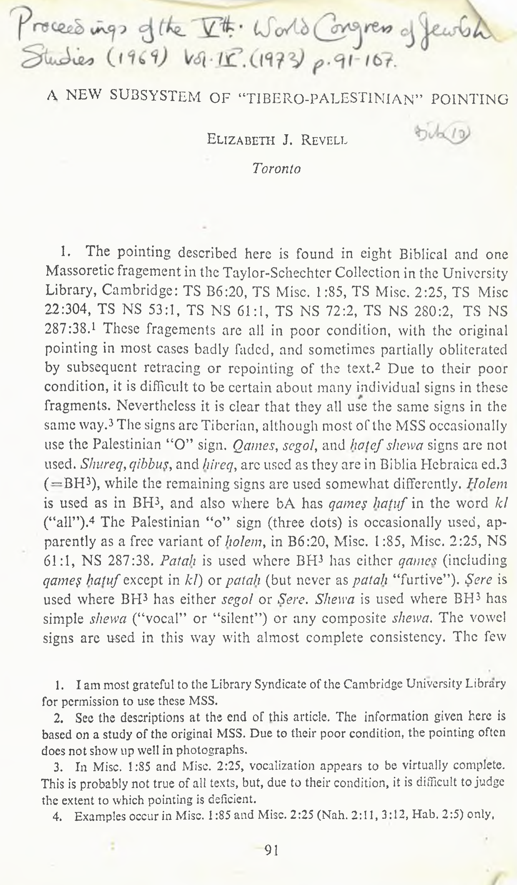

A New subsystem of Tibero-Palestinian Vocalization
A NEW SUBSYSTEM OF “TIBERO-PALESTINIAN” POINTING
Elizabeth J. Revell
Toronto
1
3
2
- The pointing described here is found in eight Biblical and one Massoretic fragement in the Taylor-Schechter Collection in the University Library, Cambridge: TS B6:20, TS Mise. 1:85, TS Mise. 2:25, TS Mise 22:304, TS NS 53:1, TS NS 61:1, TS NS 72:2, TS NS 280:2, TS NS 287:38. These fragements arc all in poor condition, with the original pointing in most cases badly faded, and sometimes partially obliterated by subsequent retracing or repointing of the text. Due to their poor condition, it is difficult to be certain about many individual signs in these fragments. Nevertheless it is clear that they all use the same signs in the same way. The signs arc Tibcrian, although most of the MSS occasionally use the Palestinian “0” sign. Qames, scgol, and hatef shewa signs are not used. Shureq, qibbus, and hireq, arc used as they are in Biblia Hebraica ed.3 (—BH ), while the remaining signs are used somewhat differently. Holem is used as in BH , and also where bA has qame$ hatuf in the word kl (“all”). The Palestinian “o” sign (three dots) is occasionally used, ap parently as a free variant of holem, in B6:20, Mise. 1:85, Mise. 2:25, NS 61:1, NS 287:38. Fatah is used where BH has either qames (including qame? hatuf except in kl) or patah (but never as patah “furtive”). Sere is used where BH has either segol or Sere, Shewa is used where BH has simple shewa (“vocal” or “silent”) or any composite shewa. The vowel signs are used in this way with almost complete consistency. The few
3
4
3
3
3
3
- lam most grateful to the Library Syndicate of the Cambridge University Library
for permission to use these MSS.
-
See the descriptions at the end of this article. The information given here is based on a study of the original MSS. Due to their poor condition, the pointing often does not show up well in photographs.
-
In Mise. 1:85 and Mise. 2:25, vocalization appears to be virtually complete. This is probably not true of all texts, but, due to their condition, it is difficult to judge the extent to which pointing is deficient.
-
Examples occur in Mise. 1:85 and Mise. 2:25 (Nah. 2:11, 3:12, Hab, 2:5) only,
91
92
ELIZABETH REVELL
apparent exceptions can, for the most pan, be treated as variants, or ignored as uncertain due to the bad condition of the fragments.5 The text of Mise. 2:25 is printed below as an example of the pointing.
6
- The use of the diacritical signs, as of the vowel signs, is partly consistent with, and partly different from, the BH3 system. Sin and shin are marked as in BH3 (but sporadically only) except in B6:20, where the dot marking shin is placed between the right hand and the middle arm of the letter. Dagesh "forte" and "lene" are used as in BH3, but also occur sporadically. Rafe is used on b, q, d, k, p, t, as in BH3, but sporadically, in all MSS but Mise. 1:85. In addition, in four MSS it is used on /, m, and n following a vowel. In two of these also, word initial / is marked with rafe after word final /. Word final het or <ayin is occasionally marked with shewa A subscript dot is used where BH3 has mappiq in Mise. 2:25 (Nah. 2:6, Hab. 1:10). A similar dot is used in three MSS to mark consonantal yodin final or (apparently) even intervocallic position. Word final consonantal waw appears to be marked by a single dot (as in shureq) in B6:20.
9
7
- The forms of the accent signs are given in Table I. As is shown there, all MSS use the same set of disjunctive accent signs (with minor graphic variations). Signs for conjunctive accents are used in only two of the MSS. Their use is sporadic, and different conjunctive accents are not distinguished. The accent system depicted appears to be much the same as that of the Palestinian texts— basically the BH3 system in simplified
10
-
A few cases of unexpected uses of vowel signs may be grammatically significant. E.g. patah twice replaces segol in the prefix of Is imperfect verb forms. Sere twice replaces qame? in the first syllable of a “segolate” noun form. Palestinian parallels to both could be adduced. In Mise. 1:85, Mise. 2:25 (Nah. 2:11), and NS 287:38, a shewa sign is used under quiescent >alef. Each of these MSS shows one case of quiescent
akf marked with rafe, and all show many cases where it is unmarked. In Mise. 2:25, thebaine >akf\s marked with rafe and shewa, and a circellus suggesting distinct readings. Consequently the use of shewa might indicate that the >akf\s not quiescent, in which case Palestinian parallels could again be produced.
-
Dagesh may occasionally mark yod (NS 53:1) or >alef (B6:20, NS 287:38) as
consonantal, but this is uncertain.
- E.g. Mise. 2:25, Nah. 1:6, 2:4, 11. Also B6:20, NS 53:1, NS 61:1.
- In Mise. 1:85 and Mise. 2:25 (Hab. 2:3) where BH3 has patal.i “furtive”. Also
in B6:20 after patah (Ex. 17:5, 5).
- E.g. Mise. 2:25, Nah. 2:12, 3:1, 9, 14, Hab. 1:12. Also Mise. 1:85, NS 61:1.
- In Mise. 22:304, Palestinian sign forms appear to be used for rebia and tebir (once) and qeresh (twice). Since they are so rare, they may not be typical of the system.
‘tibero-palestinian’ pointing
93
form.11 As for the signs themselves, some occur in Palestinian or Tiberian texts, and some are foreign to both: The Tiberian sign forms are used for atnah, zarqa, and (in one MS) pazer. The same forms are used in some Palestinian MSS. Segolta is marked with the Tiberian atnah sign, as in some Palestinian and early Tiberian MSS.12 Simpler variations of the Tiberian forms are used for tebir (without the dot) and Legarmeh (without the munah, the normal form for Legarmeh in Palestinian texts.13 The sign for pashta (two dots above the word) is used in all Palestinian MSS, and that for telisha gedola (a semicircle above the word) is used in some of them. The remaining disjunctive signs are unique in these fragments. The zaqef sign, a prepositive diagonal stroke, is used for qeresh in some Palestinian MSS. The rebia sign, a vertical stroke, is used for zaqef in some Palestinian MSS, and (as it is often slanted one way or the other) can resemble Tiberian geresh or azla. The Tiberian atnah sign is used for Tifha as well as for atnah. The same sign is commonly used for both accents in Palestinian MSS, but not in those in which the Tiberian sign form is used. Geresh is marked with two diagonal strokes — the Tiberian gershayim sign. The signs for these four accents, then, are not only not found in Palestinian or Tiberian MSS, but are in direct conflict with the usage of one tradition or the other,14 Conjunctive accents are marked in
-
The only real difference is the failure to distinguish segolta, zaqef gadol, yetib, and gershayim. Zaqef gadol is, in fact, distinguished in Mise. 2:25 (Nah. 2:10, Hab. 1:13), but the two dots may be secondary. There are one or two variants from BH3 accentuation (e.g. Mise. 2:25, Hab. 1:8, for which reason zaqef gadol is not marked there).
-
E.g. the secondary pointing of NS 72:2 (see Appendix), and TS 28:16. In NS 287:38, the zaqef sign appears to be used, as is possibly the case in some Palestinian MSS. The atnah sign is also occasionally used in our fragments where BH3 has silluq (Mise. 1:85, Neh. 12:33, NS 287:38, r!8, >kzybh Josh. 19:29 and possible examples in other fragments). Silluq is only marked sporadically in Palestinian texts, where the same sign is used as for atnah, but not where the Tiberian atnah sign is used.
-
The full Tiberian form of tebir is used in NS 287:38, of leqarmeh in Mise. 1:85.
- Soalso the non-BH3 signs for pazer (Mise. 1:85, NS 72:2), but these are not con sistent, and so not considered here. The sign for qeresh is somewhat similar to that used in TS B17:25 (Yeivin, Textus III, 1963, p. 121-124), but the two strokes there are horizontal and prepositive. In the first part of his article “Prosodic accents to Rabbinic Literature” (Leshonenu 24, 1959-60), Yeivin lists a number os MSS in which the same sign as is used in our fragments for zaqef is used to indicate a major stop within a paragraph, and so is comparable to zaqef Of these, Yeivin’s No. 4-No. 9 (p. 59-65), (to which TS Mise. 26:59 can be added) use the same system of vowel points as is found in the MSS described here. They also use the “Palestinian pashta" sign to mark
94
ELIZABETH REVELL
Mise. 1:85 with a postpositive dot (common in Palestinian MSS), and in NS 287:38 with a postpositive munah sign (used — with different values — in both Palestinian and Tiberian MSS, but the postpositive position is unique here).15
- These fragments show a considerable number of variants from the text of BH3, but these do not appear to be significant. The vast majority “are variations in vowel letters, vowel patterns, or the use of prepositions, conjunctive waw, or other minor features. They do not suggest a tradition distinct from that of BH3, but a form of the same tradition carelessly maintained or imperfectly controlled.16 A more significant type of varia-
the pause before the “zaqef” sign, and a sign like munah, but also quite similar in shape to the sign used in the MSS described here for atnah and !ifha, to mark the last pause before the end of a paragraph. There can be no doubt, I think, that these Rabbinic MSS derive from the same “school of pointing” as the Biblical texts described here. They cannot, therefore, throw any light on the origins of the diagonal stroke as a sign for zaqef In Yeivin’s MS No. 2 (TS El :107 and E2:76, which have Palestinian vowel signs) this “zaqef” sign is used with the same value as in No. 4-No. 9, but the other accent signs are different. It is noteworthy that the “Palestinian pashta” sign is not used in these two mishnaic texts, although it is used in all Palestinian Biblical texts. This emphasizes the fact that the system of accentuation used in these Rabbinic texts is quite different from that of Biblical texts, so it is probably wrong to equate the musical or interpunctional value of signs used in both types of text. Cf. the use of different words (ne<imah and zimrah) to describe the chanting of the two types of text in Megilia 32a. The prepositive diagonal stroke is used in some of the other texts described by Yeivin, but with a value different from that described above.
-
TS NS 287:38 frequently uses a maqqef sign on the same word as the munah sign, but apparently only when the word is not contextualized in a quotation, so I assume it is not a normal part of the system. This MS also contains a few examples of accentuation from the “Poetical” books, showing the same mixed relations as those discussed above. The sign for ?innor is Tiberian, that for rebia mugrash Palestinian. The Tiberian, that for rebia mugrash Palestinian. The Tiberian tebir sign is used for delii as in the so-called “ben Naftali” texts (see Diez-Macho in Hebrew and Semitic Studies Presented to G. R. Driver, Oxford, 1963, p. 23). (Palestinian texts also use their" tebir sign where BIT3 has dehi.) The signs used for rebia, azla legarmeh, and mehuppak legarmeh are, as far as I know, without parallel in those uses.
-
This is apparent from the fact that the original variants have often been cor rected by the pointing hand. Given the pointing system used, this cannot be “harmon ization” with bA against the tradition from which the texts derive. This lack of control shows even in the massoretic list of NS 287:38 vl 1, where, above the entry listing two occurrences of whqrwb, is a note, again apparently by the pointing hand, that one is spelled defectively (Est. 1:14). The most interesting of the variants is the writing of “Nebuchadnezzar” as two words, in Mise. 22:304 (Ezra 1:7, 2:1), and also “Sheshbaz- zar” (Ezra 1:8), but this is accented (with the prepositive zaqef sign on the first shin) as one word.
‘tibero-palestinian’ pointing
95
tion, perhaps, is the fact that in all ten cases where BH3 has qere-ketib readings, these fragments give only the qereA1
- The relationship of this pointing to other systems is thus an interest ing question. It seems, at first glance, that the Palestinian tradition is the origin of most of the features of the pointing of these MSS which are divergent from BH3. The extra “o” sign is a typically Palestinian form. The use of an “o” sign where BH3 has qames hafufis common in Palestin ian MSS, although the restriction of this usage to kl has no parallel there. Many Palestinian MSS use only one “a” and one “e” sign, although no Biblical texts of this sort are yet known. In addition, many of the accent signs are forms found in Palestinian texts, while the form of pashfa is characteristic of them. It is certain, then, that this pointing system has very strong connections with the Palestinian.
- Having reached this conclusion, we must consider the light thrown by these fragments on the transition from the use of Palestinian pointing to the use of Tiberian, for it is obvious that such a transition did take place. Some scholars appear to envisage a unilinear development from a simpler system (five vowel signs, no conjunctive accents) to a more complex one (seven vowel signs, conjunctive accents), with the birth of the Ben Asher system (seven vowel signs, shewa, and conjunctives) as the final result of the development. I began by thinking this development unlikely. I now think there is ample proof that the transition could not possibly have occurred in this way.
7.
If a single process of transition did take place, these fragments, with their mixture of Palestinian and Tiberian characteristics, must repre sent a stage in it. Yet their five vowel quality signs form a system more remote from BH3 than is found in any Palestinian Biblical MS, while their use of a shewa sign places them closer to BH3 than any Palestinian text now known. Again the accent signs are clearly based on the Palestin ian system, and are equally clearly in the process of change to the Tiberian, which would place them at the end of the Palestinian development if a unilinear process is supposed. The accent system, however, is generally
- Even in the massoretic list, where bsdyw is written for the hsdw of Lam. 3:32 (NS 287:38, v8). This feature, and others, such as the absence of the massoretic notes (the two notes in Mise. 2:25, unique in these fragments, hardly come into this category) suggests texts prepared for a purpose to which the consonantal form of the text was not important, as with the “study codices” or “listener’s codices” of Goshen-Gott- stein (see Textus II, 1962, p. 38ff). The existence of a massoretic list showing the characteristics of these texts is, therefore, doubly surprising. Qere-ketib variants are noted in most Palestinian texts, although not always in harmony with BH3.
96
ELIZABETH REVELL
less complex than that of the Palestinian tradition, where half the texts use conjunctive signs, and, of those, nearly all mark more than one con junctive accent18״ With both vowel and accent signs, then, we have evid ence which would place these texts at both ends of a unilinear develop ment. Consequently a unilinear process of transition cannot be envisaged. 8. My own view is that both simpler and more complex types of Pales- * tinian pointing were in use at the same time, and that the Tiberian system was also in contemporaneous use for a Considerable period. I have urged this view elsewhere.19 Here it need only be pointed out that the evidence for the use of the more complex types of Palestinian pointing at a relatively late period is the Tiberian influence visible in them.20 However the contemporary existence of the Tiberian system is a prerequisite of Tiberian influence on other systems. Simpler types of pointing certainly were in use at a late period. One text, TS H2:30, with a six vowel-sign system, is written on paper, and can, therefore, scarcely be dated before 800, and is probably much later. Another, TS H2:29, with a five vowel-sign system, contains a poem ascribed (in the text hand) to Yehuda Zebida, who probably lived in the eleventh century.21 This latter date is also an indica tion of the length of time over which we have to suppose contemporaneous use of the Tiberian and Palestinian pointing systems.
9.
If the Palestinian and Tiberian pointing systems were used together over a long period, as seems certain from the above evidence, the change from one to the other must have been conscious and deliberate, not the result of a process of historical development in the writing system. The change must have been made at different times by individual scribes in different communities for their own purposes. Indeed it does not seem unlikely that some scribes may have used Tiberian pointing for some
HL It should also be noted that, as described in note 14, Rabbinic texts pointed as are the Biblical texts discussed here use a single sign to mark the cadence at the end of a Mishna division. The Rabbinic texts with Palestinian pointing (TS El :107 and E2:76) use a more complex method of marking this cadence, involving a greater number of signs.
19.
In my Hebrew Texts with Palestinian Vocalization (forthcoming from the
University of Toronto Press) chapter V sections 12-16.
- e.g. the use of Tiberian sign forms for mappiq etc., but many of the suggested
marks of this influence are questionable.
- See H. Schirmann, New Poems from the Geniza (Jerusalem 1966 p. 87f,, and cf,
S. Goitein, JAOS 86 (1966) p. 234.
‘tibero-palestinian’ pointing
97
purposes and Palestinian for others.22 There is, as far as I know, no direct evidence for this suggested multiplicity of changes, but further indirect support is not difficult to find.
-
A unilinear change-over from Palestinian to Tiberian signs re quires that the process start with one sign and finish with another.23 Besides MSS such as those considered here, however, in which the Palestinian “o” sign is used in an otherwise Tiberian pointing, there are texts in which the “Palestinian qames” (—), and the “Palestinian dagesh” sign are, respective ly, the only foreign elements in a Tiberian system.24 With few exceptions, in such MSS, the Palestinian sign and its Tiberian counterpart are used as free variants, and there is no visible reason for the use of the extraneous sign.25
-
Again, the Palestinian “o” sign appears in a considerable variety of otherwise Tiberian pointing, ranging from that discussed here to types
-
As evidently occurred with the Babylonian pointing see M. Wallenstein, BJRL 40 (1958), p. 557f., and cf. (from a later date) the quite common Yemeni practice of using Tiberian pointing for Biblical texts, and Babylonian for Targum or Liturgy in the same MS (as in British Museum MS Or. 2215, 2227, etc.). For the probable reasons for this practice see Margoliouth, PSBA 15 (1892-3), p. 198 (No. 35).
-
Diez-Macho has suggested that the changeover began with pat ah and ended
with holem, see Veins Testamentum Supplements IV (1957) p. 31.
-
For the “Palestinian qames" see I. Yeivin, Textus III (1963) p. 127 on the use of this sign in the massora of the Cod. Bab. Petropolitanus. The same feature occurs in a liturgical text, Bod. Heb. f 32, f. 21-22 4־ ENA 2678, f. 19-20. (The latter fragment, in the Library of the Jewish Theological Seminary in New York, was kindly drawn to my attention by Mr. I. Yeivin.) The use of the “dagesh” sign is much more common, see, eg. TS NS 110:33; 110, 115:5, 299:91. As these fragments exemplify, this sign is used with pointing showing either “Palestinian” or “Babylonian” characteristics, as well as with pointing of a bA type. The sign may not, therefore, be Palestinian in origin, but could perhaps derive from the earlier form of the Arabic tashdid sign, a form which continued in use in North Africa. (The more familiar form of tashdid is found in place of dagesh in later MSS, e.g. in TS 8H22:16, Westminster College Frag. Heb. Cairensia Liturgica 1:48).
-
A tendency towards specialization is sometimes visible in the use of the Pal. “o” sign, see the remarks of M. Friedlander in PSBA 18 (1896), p. 89 (on Bod. Heb. f51, f. 1-9), and the fact that in Mise. 2:25 the sign is almost completely confined to defective writings. As in these texts, however, specialization never appears to be complete. In one or two fragments, the Pal. sign appears to be the only mark of dagesh e.g. TS 10H9.T4) but the Tiberian sign is usually used as well. In two unique fragments a combination of Palestinian and Tiberian signs is used, apparently to avoid placing any signs within the line of text. Thus Bodleian MS Heb, d62 f. 2r (unpublished) uses Palestinian signs for shureq and dagesh in an otherwise Tiberian system, and in the lower margins of TS NS 249:14 4- TS 12:210, (text 9 in my Hebrew Texts,.,, see note 19) Tiberian shureq, dagesh, and also bolem are so replaced.
98
ELIZABETH REVELL
almost identical to that of BH3.26 If these MSS are to be taken as repre senting one particular stage in the change from Palestinian to Tiberian pointing, we must accept the fact that one or the other of these systems was used in a variety of different ways during this stage. In fact it seems likely that both were so used. I have argued above that a number of Palestinian systems were in use at the same time. The same is demonstrably true for Tiberian pointing in the later middle ages.27 We can scarcely argue that diversity was less common in earlier times! Consequently it seems to me impossible that the Tiberian system of pointing should have grown out of the Palestinian by a single process of change.
- The MSS discussed here are themselves evidence for the con temporaneous existence of a number of different pointing systems. Besides the features apparently Palestinian in origin noted above, they contain features which have no parallel in the Palestinian system as at present known, and some which even conflict with it. Some of these features can, of course, be ascribed to the influence of the ben Asher tradition, but by no means all, as a consideration of them shows. No Palestinian text uses a sign equivalent to Tiberian shewa. Some show tendencies to develop such a sign, but the idea of using a sign which did not also denote a particular vowel quality was never achieved, so that different signs had to be used for “shewa vowels” according to the phonological context . 28 Simple shewa often replaces hatefs in the “ben Naftali” texts 28a, but they are rarely consistent in this respect, and frequently use vowel quality signs in this position (recalling Palestinian usage) and thus differ from the marked regularity of these fragments. The marking of shin by a dot within rather than above the letter is found
29
- E.g. Bod. Heb. f51, f. 1-9 (described by Friedlander, op, cit., see note 25).
TS A10:14 and A12:10 are examples of intermediate types.
-
Besides the ben Asher system, we have a variety of types of pointing in the “,ben Naftali” texts listed by Diez-Macho (op. cit. see note 15). Late examples of pointing without qames or segol are found in TS Mise. 12:7 (a printed text of Rashi pointed by hand), and British Museum Or. MS 5556D, f. 22x-23 (psalms written on the back of a letter in Portuguese).
-
The use, in our fragments, of the simple shewa sign where bA has hatef games, or shewa before yod, is particularly surprising in texts so close, in other respects, to the Palestinian fragments.
28a. By this admittedly unfortunate name I refer to the manuscripts described
under the same name by Prof. Diez-Macho. (See note 15).
29., E.g. Diez-Macho’s MS 3 and 4 in “A New List of ben Naftali MSS” (op. cit.
see note 15).
‘tibero-palestinian’ pointing
99
in some “ben Naftali” texts, but is in direct contrast to Palestinian usage, where such a dot marks sin.^ The marking of dagesh “forte” and “lene”, and of rafe on b, g, d, k,p, t, is common enough in Palestinian texts. In those texts, however, dagesh is generally much more frequently used than rafe, whereas the reverse is true in the texts described here. The difference is emphasized, in our texts, by the use of rafe to mark word initial I following the same consonant in word final position. Such a consonant is marked by dagesh in Palestinian, as in Tiberian texts.31 The use of rafe on postvocallic /, m, and n hs no parallel in Palestinian texts, but immediately suggests the extended usage of dagesh and rafe found in “ben Naftali” texts.32 The marking of accents in our texts is mostly done by signs used either in the Tiberian or in the Palestinian pointing. Many are common to both. However the signs for zaqef rebia, tifha, and qeresh, have no parallel, in the use to which they are put, in either Palestinian or Tiberian systems, including the “ben Naftali” texts.
-
These peculiarities show, then, that our texts are not merely repre sentative of a stage in a process of transition from Palestinian to ben Asher pointing. Some third influence must have produced the features which are found in neither tradition. These “non-Palestinian non-ben Asher” fea tures appear mostly to be confined to the writing system. However, the use of rafe on postvocallic I, m, and n suggests features of pronunciation foreign both to ben Asher and to the Palestinian tradition, and it is pos sible that others existed. Some of these features ascribed to the “third influence” are found in the “ben Naftali” texts, as was pointed out above. The “ben Naftali” pointing, however, shows, even in its most primitive stages, a more developed use of Tiberian signs, and far less use of features deriving from the Palestinian tradition, or from the unknown “third
-
E.g. TS A43:l (Kahle MdW II MS M).
- E.g. Kahle’s MdW II, MS M, Is. 46:12, 57:11, cf C. and Ginsburg, Introduc·
tion to the .., Hebrew Bible (New York 1966), p. 116 f.
- Diez-Macho in his “New List of ben Naftali MSS” (op. cit. see note 15) p. 25, suggests that this type of usage is found in the Palestinian texts. I would suggest that his examples are all cases of rafe marking the absence of an expected dagesh. (Cf. Murtonen, Materials for a non-Masoretic Hebrew Grammar I, Helsinki 1958, pp. 33-34). For the fullest use of dagesh and rafe in “ben Naftali” texts, see Morag, JSS 4,1959, p. 217 if, on the Codex Reuchlinianus. In many MSS, however, dagesh and rafe are less freely used, rafe is more common than dagesh, and is most common on 1, tn, and n. E.g. J. T. S. MS E. N. A. 2118, f. 14-15 (Murtonen, Abr Nahrain III, 1961-62, pp. 45-59).
100
ELIZABETH REVELL
influence,” than is found in the fragments discussed here.33 These frag ments, then, would appear to stand in a line of development between the “ben Naftali” texts as described by Diez Macho, and the sources of the peculiarities which distinguish them from other Tiberian texts. They can therefore be described as examples of the earliest stage yet known of the so-called “ben Naftali” tradition.
14.
If this identification is correct, the date of these MSS is of con siderable interest. Various features of the Fragments suggest great age. Their generally poor physical condition and badly faded ink make them look older than most of the Palestinian fragments. However the accidents of preservation, and the composition of the ink must be allowed for. 34 The shapes of the pages arc rather surprising, as the width is usually equal to, or greater than, the height, whereas in both Palestinian and Tiberian MSS, the height is usually greater. With this format, it is even more surprising that the text of the fragments is not normally divided into columns . The script of the fragments, where clearly visible, seems fairly homogeneous . It is a freely written, neat, small, non-ornate square script of a Palestinian type. It is quite similar to that of TS DI :12, (dated by Weil c. 700, but in my opinion somewhat later), and somewhat similar to that of MS ENA 2118 of the Jewish Theological Seminary of America (dated by Murtonen c. 900). The fragments are possibly to be dated, then, to the beginning of the ninth century.
36
35
37
38
- The main features present here, but not in the “ben Naftali” texts are (i) Palestinian: the extra “o” sign, the pashta sign, and the very simple system of accentua tion. (ii) “Third influence”: the signs for zaqef, rebia, tifha, and geresh, and the use of the shewa sign. All features but this last are assimilated to ben Asher in the texts listed by Diez-Macho {op. cit. see note 15). However features deriving from the “third influence” are retained, at least in some “ben Naftali” MSS. These are the marking of shin by an internal dot, the use of tebir for dehi in the accentuation of the “poetic” books (Palestinian texts also use the same sign — 2 dots below the word — in both positions), and the extensive use of dagesh and rafe on all consonants. This last feature (the distinctive characteristic of “'ben Naftali” texts, see Morag, Leshonenu 29, 1965, p. 208), is much more marked in later texts than in the fragments discussed here, but, the development of the usage can be observed in the later texts, which shows that the chronology suggested here is correct. See Diez-Macho (op. cit. see note 15) p. 18-19, 34, The inks of Geniza MSS which now appear red-brown or olive-brown seem,
in general, to have faded much more than those which appear dark brown or black.
- NS 53:1 was certainly written in two or three columns, but is unique in this
respect. Palestinian Biblical codices were usually written in two or three columns.
- The script of B6:20 is larger and more ornate than the others, That of NS
287:38 tends towards cursive.
- In Annual of the Leeds University Oriental Society 3 (1961-62) p. 69.
- In Abr Nahrain III (1961-62) p. 47.
4tibero-palestinian’ pointing
101
APPENDIX.
Description of the fragments, TS BG:2Q A leaf of parchment about 250 mm square with part of a second. The written area is about 170 mm high by 165 mm. The text is Ex. 2:23-3:8, 16:32-17:10, Hebrew and targum in alternate verses. The original script was a rather large, formal, Palestinian square character in olive brown ink, now very faint. It was later retraced in a darker ink. The original pointing, also in olive brown ink, is also very faint over most of the MS, and in fact invisible in parts. Some signs were retraced or corrected in a darker ink, and a subsequent hand added occasional signs, (including qames) in black. TS Mise, 1:85 This fragment was originally discovered by Dr. Manfried Dietrich some years ago. I am very grateful to him for allowing me to use it here. It consists of two conjugate leaves of parchment with their outer edges torn away, height c. 225 mm, maximum width 170 mm. The leaves are torn, and in rather poor condition. The written area is c. 170 mm high. The text covers Neh. 8:17-9:16, 12:25-46. The script is an informal Palestinian square type in ink varying from olive to dark brown. The pointing is in a similar, but paler ink. Text and pointing arc much clearer than in most of the MSS described here. TS Mise. 2:25 Two conjugate leaves of parchment with the outer edges torn away, height 250 mm, maximum width 180 mm. Part of the material is badly deteriorated, as if from dampness. The written area is c. 170 mm high. The text covers Mic. 7:16-Hab. 2:6. The script is similar to that of Mise. 1:85, but more formal. The ink is pale olive brown. The pointing is in a similar ink. A few corrections were made, again in a similar ink. Both text and pointing are badly faded and illegible in parts. TS Mise, 22:304 A sheet of parchment with the upper inside quarter torn away, originally about 250 mm square. The written area is about, 170 mm high by 175 mm. The text covers Ezra 1:1-2:36. The original script was a fairly formal square Palestinian type in pale olive brown ink. It was retraced in dark brown. The original pointing, in pale red brown, is badly faded, especially on the verso. The text was repointed with a system similar to in dark brown ink, obscuring the original pointing in many places. TS NS 53:1 The top inside corner of a leaf of parchment, now about 155 mm high by 115 mm. The text covers II Kings 10:22-27, 12:10-13, and must have been written in two or three columns.
102
ELIZABETH REVELL
The script is a fairly free Palestinian square hand in olive brown ink, with pointing of the same colour, badly faded, and mostly illegible on the verso. TS NS 61:1 Two conjugate leaves of parchment, about 225 mm high by 215 mm, now in several pieces, and mostly very badly deteriorated as if from damp. The written area was perhaps about 150 mm square. The text covers Hos. 13:4-Joel 4:2. The script is a square Palestinian type in pale olive brown ink, with pointing of the same colour. Both text and pointing are very badly faded, and in fact completely invisible over most of the MS, even when ultra-violet light is used. TS NS 72:2. A leaf of parchment, about 170 mm high by 185 mm, somewhat damaged at the edges. The written area is about 140 mm high by 150 mm. The text covers Gen. 47:27-49:14. The script is a fairly formal Palestinian square hand in olive brown ink, much faded in parts, and retraced in black on the verso. The original pointing appears to have consisted of accent signs only, marked in a pale red-brown ink, now much faded. The text was subsequently repointed, in a darker brown ink, with vowels and accents in a system similar to BH3, often obscuring the original pointing. The secondary accentuation shows occasional differences from bA, the most significant of which, perhaps, is the use of the at nah sign to mark segolta as well (Gen. 48:13, 16, 20). TS NS 280:2. A fragment of a leaf of parchment, now about 100 mm high by 135 mm, much damaged. The text covers Nu. 8:19-26, 9:8-14. The original script was a fairly free Palestinian square type in dark olive brown. It is badly faded in parts, particularly on the verso, where it was retraced in an ink which is itself badly faded. The original pointing was in a pale olive brown ink, now almost completely illegible on the verso. Occasional corrections were made in a brown ink, and the text was re pointed in a system similar to BH3 in black, often obscuring the original pointing. TS NS 287:38. This text was first noticed, I think, by Dr. N. Allony, and is being published, for the interest of its contents, by Prof. G.E. Weil. I am grateful to these scholars for encouraging me to make use of it here. It consists of a leaf of vellum, about 140 mm square, with slight damage, containing a massoretic list of words occurring in pairs. The written area is about 95 mm by 105 mm. The script is an informal Palestinian square type, tending towards cursive. The ink of the script is olive brown, that of the pointing pale red brown, badly faded, and probably obliterated in places.
‘TIBERO-PAL ES TINIAN‘ POINTING
103
(i) The “Prose Books”
Typical Form
Variant Forms
Tabic I. Accent Signs
(Silhiq At nah Segolta Zaqef qaton Zaqef gadol Rebia Tifha Zarqa Pashtafyetib Tebir Geresh (Gershayim Legarmeh Pazer
Tdisha
Conjunctives
J
/
__ /
_ z
j/
NS 287:38 (1 ease).
Mise. 2:25. Mise. 22:304 (1 case).
"7
u
*/ /
\
y...
<
NS 287:38, — Mise. 22:304 (1 ease) Mise. 22:304 (2 cases). (No Example in Mise. 22:304) Mise. 1:85 /— NS 72:2. Mise. 1:85 NS 287:38 (1 ease). B6:20
NS 72:2 (1 case?)
Mise. 1:85 y- (5־) NS 287:38.
(ii) The “Poetic Books” (NS 287:38 only) Atnah Dehi Rebia Azla legarmeh j־^ Rebia mugrash Mehuppak legarmeh Sinnor Conjunctives —
n--
—
04 ו
ELIZABETH REVELL
TS MISC 2:25 . ?01.1, recto
[הרהי]הקני
הנברחת J - [הרהי
לא
םהינז]א 4 -L םהית]ורגסממ
MICAH 7 16
17
[לע
רבועו
ןרע]
18
[בושי
:אוה
דסח
ץפח]
18-19
תת [ן
:םתאטח
י ט לכ
19-20 ת]לצמב
[ימימ
וניתובאל / ?
ןרזח סרהנ
רפס
הרנ□
תל^שנ
20 r NAHUM 1 1
_ ישקלןאה
[ה ה
המח טקנ י
לעבו
הר]הי
2
אל[הקבו
חכ
לדגר
םיפא
ךרא
הרהי
תגרהנה
והשב לכו
רעג מיב/ו2
:וילגר
ןנער קבא
וכרד
ו^ממ
ושער]
םירה
:לל]מא■
ן
ונבל
חרפו
למרכו'
ןשב
ללמא
3-4
4-5
ינפ(ל
:הב
יבשי
לכר]ל}בתו
וינפמ
ץראה
אשת
ר
·וגגומתה
ש^כ
ותמח הכתנ
רפא
ןורחב
ימר םוק!
דמע/
ימ
יב’םר ה|רצ
זועמל
הרהי
בוט 7
:ונממ
6-7 ·וצתנ
יא?'2דר
המרקמ
ר ד-- -ע-ה
--'
םימ|עפ
םוקת
כ7ה אוה השע אל
הרהי
לא 7
סיאבס ·7 הער
·ר סב םאב
םיכבס %,:‘ ־־7 בשח לע הרהי
ן[ערי
7
םיריס
אצ/.ךממ
8
11
ם[יבד
ןכו
םימלש
םא
12 הכ רמא ה^הי
ה[עו
:דרע
ךנעא
אל
ךיתינער
ך J
ךילעמ 7
והטמ ״7
רבשא
א.
נא,?.}5
^יתררסר׳מו
12-13
13
13
\
הרהי
ךילע
14 הרצו
3
5
6
9
10
‘TIBERO-PALESTINIAN’ POINTING
105
[הכסמו
לספ
תירכא
ךיהלא
תי]במ
NAHUM 1 14
TS MISC. 2:25 Fol.l, verso
מ^עז
ההךי0 ךיק^ר רעבמ
y[
ר{ב
רבעל
דרע
ףיסוי
יכ] אל
[ךרד
הפצ
הרוצמ
&גהי רוצ!
ןר|אגכ
[□דאמ
ןואג בקעי
תא
הוה]
רהירופג
ןגמ
:ותח^
□
[שורבהו
וריכה
ב, וי ם
בכרה]
םידיפלכ'
ה ן
יארמ
תובוחרב
ןוק^תשי
[כרה
רלל]התי
התמוח'רדהמ{
□תכילהב
ולעפי
ר
ירידא
]רר[כז
ן
:וצצורי]
2:1
1
2
3
3-4
4
5
5-6
הת^ג
בצה.ו
:גומנ
לכיההו
·וחתפנ
תורהנה
ירעש
6-g :ךכו^ר
ןהיבב
לע 7
תופפותמ
םינוי'
לוקכ
תונגנמ
ייתוהמאו]
ןיאו
·ודמע
ודמע
םיסנ
המהו
איה
ימימ]
:הדמח
ליכמ ילכ
דבכ'
תנובת/
הצק,
ויאי]
לכב
הלחלחו
םיכרב
?בלר סמנ קיפו
ה־^לבמו
אוה
הערמ
תוירא
ןרעמ
ה['א
:ר-רראפ]
:דירחמ
ןיאו
הערא
םש רוג
איבל
הירא]
וירוח
ףרט
אלמי!
רי־תאבל/
§גתמו
ריתו׳ך]
ה
וה/יניד
ינ^ה ?לא ך םאנ א
]
ברח
לכאת
יריפבו
הפכר'
ןשעב
יתרע]בהו
עמש?
הפלש אלו
7
ץראמ
יתרכהו
]
יוה ?די
;הככאלמ
דוע לוק
כ׳הל שחכ
םימד
/ ריע
אל
האלמ
/ קרפ
8
9
10
ן ן
11-12
12
13
4 ן
4ן
4ו
14-3:1
*
ן
1
/ /
106
ELIZ ABETH REVEL L
TS 2:25 ?01.2, recto
[לוקו
טוש]
בר|ה
בהלו
הלעמ]
[ולסכו
ה^וגל]
םי[וג
הרכמה]
םאנ הוז^י
ךילא]
תוכלהמו
ךרעמ
םי
וג]
ךתחמשו
ך
יתחבנו
[ימ
הונינ
הדדש]
NAHlזM 3 2
3
3
4
ל
5
6
7
ו ן [
אונמ מ/
יביטית]!
[:התמיח
ליח ם! םימ
ךתרזעב
?ה ·ו
םיבול/
9
[לעו
ת}וצוח[לכ
שארב
ושטרי
10
[ירכשת
םגו תא 7
:םיקיזא
10-11 וקתר
[סיניאת
ךןרצבמ
לכ
:בךואמ
זועמ
[םיישנ
הנה ךמע
:לכוא
לע יפ
*־ י ־־
......................
ולספנו דג-; ־־
11-12
12-13
ךיח[יררב
סא
הלכא
ךצרא
.ירעש
·וחתפנ
י^מרר
יאפ טיטב
ךדרצבמ
יקזח
׳ףל
ךלכ^ת
ברה
ךתירכת
ש/
ךלכאת
םש
[ךילכר
יתיברה
:הבראכ
15-16 ידבכתה
ךיר^פטו
הבראכ*
ך?רדנמ
:ףע!ו
16-17
ד[רונו
החר^
שמש
הרפסויב
17
רנ^שי
רהש/
ךלמ
-ךיער
ןיא ה(רכ
:ץבקמ^ןיאד
18-19
[ךיל/
ועקת ףכ
8
8
18
19
13
14
15
4TIBERO-P ALESTINI AN’ POINTING
107
TS MISC Fol.2,
2:25 verso
!יתע
דע] אנא י הרה ש ו
[למעו
ןוא
ינארה]
[הרות
ג-ופת
ןכ
לע]
HABAKKUK 1 2
3
4
ואר
:לקעמ
םפשמ
לע] ןכ אצי
4-5
:רפסי
יכ
ונימאת
אלו
םכימי/
5 לעפ]
תשרל
ץרא
ןבחרמל
.ךלוהה
רה]ננהר
םירמנמ
:אצי ולקו
ותאשו
וספש]נ
שח
רפע^ רשנכ
ן אב ·ר
קוחרמ]
םיכלמב
:יבש אוהו
ל^רחפ
ףסא]ר
זא
:הדכליו
רפע
רבצן]
ישקקק
^הלא
הרהי
םדקמ]
ם?ניע
רוהט
:ותדסי]
6
7-8
8
9-10
11—10
12
12-13
עלבב
שירח׳ת'םידגוב'
סיבת
המק
13
לשומ :רפ הלכ
אל
יגדכ םיה שמרכ
14-15 םדא]
:ליגי_ר
לע ןכ חמשי
ותרמכמב
·רה
טא פ
15 ןר]
ולכאמל
וקלח
ןמש 7
יכ המהב
ותרמכמל]
16
וג ן ם אלו 2מחי:ל לע
גרהל
17-2:1 דימת]
המ
תוארל
הפצאו
רוצמ
לע]
ןוזח
7
בתכ
רמאיו'ה
וה
י
יננעיו]
חפיר
יעימל
ויחי
יב: יכ ייע
ארוק]
1
2
2-3
הפה
:רחאן
יכ אל ן5א אל.ר
ול'הכח
3-4 המ]ומחי
ןןןה
ףאר יכ
:היחי
5רת
־רמאב
ק^דצר]
תומכ
רשבנ א-רהר
לואשכ
ביחרה
רשא]
אולה
:סימעה
וילא ליכ
ץבק^ו
םירגה]
4-5
5
5-6
